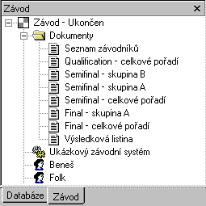

 During the measurement of the race, result sheets are automatically created. The following documents are generated:
The result sheets are stored in the Documents folder in the Race tree view. They may be displayed and printed out. Double-click the document icon in the tree to open the document in the right-hand application workspace. Print the document using the Print command in the File menu or by clicking the printer icon the toolbar. You may also export the result sheets into the HTML format. Right-click anywhere in the result sheet window and choose the Export to HTML in the pop-up context menu.